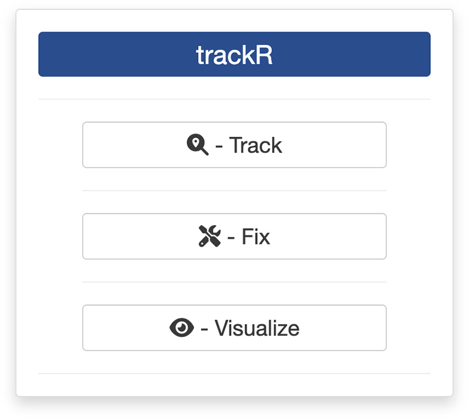
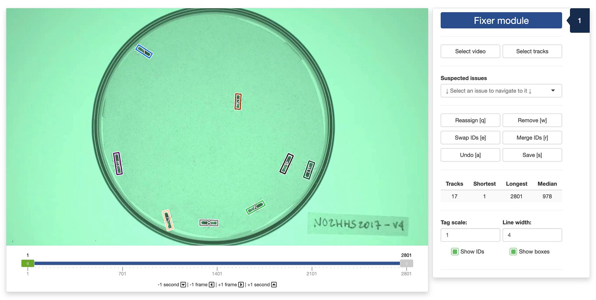

3. Fixing tracks
0. Introduction
Once you have finished tracking a video, you can manually inspect the results and fix any potential error using the track fixing app provided with the package. You can launch the app by typing the following command in the R console:

This will open the app launcher either in the viewer pane of RStudio and Positron, or in a separate window, depending on your local configuration. In RStudio at least, you can control where the app opens by setting the launch.browser option. For instance:
trackR(launch.browser = shiny::paneViewer())will launch the app in the RStudio viewer pane.
Once the launcher is running, click on the “Fix” button to launch the tracking app. The launcher will close and the app will start shortly after.
1. Fixer module
The first step of the fixing process is to load a video file and the tracking data into the app. To do this, simply click the “Select video” button. This will bring up a navigator that you will use to locate the video file that you would like to track. Once you have located the video file in the navigator, click the “Select” button. The app will open the video and display its first image in the display window (see below).
Repeat the process with “Select tracks” button to load the tracking data. Once this is done, the tracked objects should be indicated by a colored box with a number corresponding to their tracked identity (see below).

You can navigate through the video by sliding the green tab along the timeline displayed below the video. You can also use the arrows on your keyboard to navigate through the video, either frame by frame, or one second at a time.
Below the navigation controls, you will find a dropdown menu that lists a series of suspected issues with your tracking data. These are simply positions in the video where an existing track suddenly disappears, or a new track suddenly appears. While these do not necessarily indicate an actual error, they are often indicative of a problem with the tracking. You can navigate to each of these suspected issues by selecting them from the dropdown menu.
Below again are 6 buttons that allow you to perform a number of correcting operations if you find that trackR made a mistake during tracking:
- The “Reassign” button (or the “q” key of your keyboard) will open the reassignment menu. When the menu has opened, you can use the first dropdown selector to select which track to assign a new number to or to reassign to a previously existing track. You can then type in the input box below the number you would like to assign to the track.
- The “Remove” button (or the “w” key of your keyboard) will open the removal menu. When the menu has opened, you can use the dropdown selector to select which track to remove.
- The “Swap IDs” button (or the “e” key of your keyboard) will open the ID swapping menu. When the menu has opened, you can use the two dropdown selectors to select which tracks to swap. Note that swapping will occur from that frame on. Previous frames will not be affected and tracks will retain their original ID.
- The “Merge IDs” button (or the “r” key of your keyboard) will open the ID merging menu. When the menu has opened, you can use the two dropdown selectors to select which tracks to merge together. Note that the resulting track will retain the ID of the first selected track.
- The “Undo” button (or the “a” key of your keyboard) will undo any change made during the fixing session in the reverse order that they have been made.
- The “Save” button (or the “s” key of your keyboard) will save the modifications that you have made during the fixing session. These modifications are saved in a different file than the one containing the original tracking results to prevent accidental modifications to permanently damage the original results. The modified file will have the same name and be saved at the same location as the original file but with “_fixed” appended to its name. Note that if you interrupt your fixing session before the end of the video, you can resume it by loading the “[original_file_name]_fixed.csv” file instead of the original one. In this case, any new correction will also be saved to the “[original_file_name]_fixed.csv” file.
Under these buttons, some basic statistics about the tracks are displayed below the fixing controls. These can be useful to track your progress during a fixing session. For instance, if the statistics table shows that your file contains 10 tracks but you know you only had 8 individuals in your experiment, this is a good indication that some errors remain to be fixed.
Finally, at the very bottom of control panel, you can modify the “Tag scale” and “Tag line width” parameters to make the track tags more visible on the video.
2. Output data
Once you click the “Save” button in the app, the data that is saved in the “[original_file_name]_fixed.csv” file has the same columns has those saved originally by trackR (see here for more details).
The file will also contain 2 additional columns:
- “track_fixed” is the identity of the tracked object after the corrections have been applied. The
trackcolumn retains the original, uncorrected identity. - “ignore” indicates whether you can ignore (TRUE) or not (FALSE) the corresponding row when you analyze the data. Ignored rows are those, for instance, from tracks that you have chosen to remove or merge with another track.
The video used throughout this tutorial was provided by Sridhar, V. H., Roche, D. G., and Gingins, S. (2019). Tracktor: Image-based automated tracking of animal movement and behaviour. Methods Ecol. Evol. 10, 691. doi:10.1111/2041-210X.13166 and used here with permission of the authors.